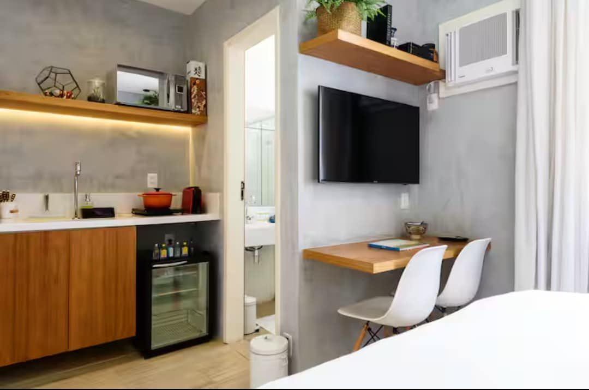

Praia do Leblon
Mar aberto. Um convite a desacelerar.
LEBLON · RIO DE JANEIRO · 399
Studio · Até 2 hóspedes

Um studio com linguagem orgânica e industrial, pensado para uma estadia a dois. Cozinha compacta e conforto para descansar entre um passeio e outro.
O BAIRRO À SUA PORTA
Entre um mergulho, um café e uma boa leitura, descubra o Leblon.
Mar aberto. Um convite a desacelerar.
Uma pausa para o café.
Ataulfo de Paiva, 1022.
Entre livros e descobertas.
Dias Ferreira, 417.
Lojas e um passeio no bairro.
Afrânio de Melo Franco, 290.
Fotos e características em revisão para publicação.